Lecture08 Animation System - Basics
挑战：
- 不能预设玩家的行为，考虑动画与Gameplay的互动，与环境的交互
- 实时，计算和存储开销
- 真实感（表情、Ragdoll、Motion Matching …）
2D Animation
Sprite Animation
- 逐帧绘制，循环播放
- Sprite-like animation technique in pseudo-3D game
- 《Doom》 绘制各个视角的sprite，做伪3D
- Sprite Animation in Modern Game
Live2D
- 把角色/主体的每个元素作为独立图元 eg.眼睛、鼻子、嘴巴 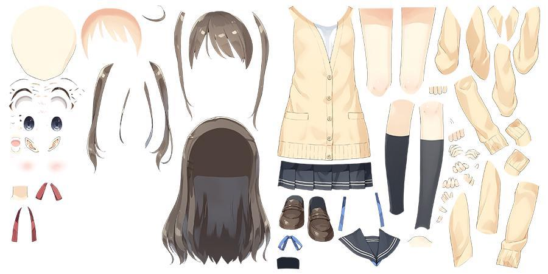
- 仿射变换 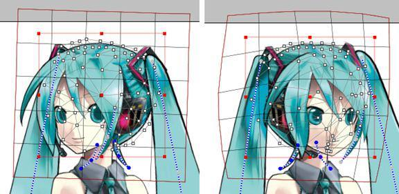
- 图元的前后遮挡由深度决定
- 每一个图元有控制网格 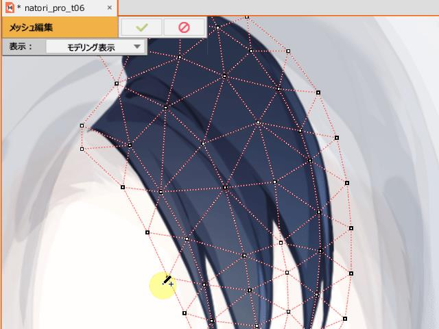
- Key frame
2D Skinned Animation 2D蒙皮动画
3D Animation
DoF, Degrees of Freedom 自由度 6DoF + Translation X Y Z + Rotation Pan/Yaw Tilt/Pitch Roll 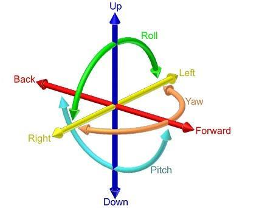
Rigid Hierarchical Animation 基于刚体的层次结构动画
- “皮影戏”
- 直接连接Mesh，会导致Mesh互相产生穿插
Per-vertex Animation
- 旗帜、布料、流体等（从物理烘焙而来的顶点动画实现）
- VAT, Virtual Animation Texture：用贴图存储顶点
Morph Target Animation
- 顶点动画的变种
- 顶点带有权重，邻近顶点相互影响
3D Skinned Animation 2D蒙皮动画 （见下章）
Physics-based Animation
- Ragdoll
- 布料和流体
- IK, Inverse kinematics 反向动力学
Animation 创作方式
- Key frame
- 动作捕捉
Skinned Animation Implementation
怎样将Mesh运动起来
- 创建一个绑定姿态的Mesh
- 创建绑定骨骼Skeleton
- 刷定点权重（蒙皮）
- 骨骼动画
- 顶点按骨骼动画和蒙皮权重运动
Different Spaces
- Local Space 每一个骨骼节点
- Model Space
- World Space
骨骼
Humanoid 两足动物 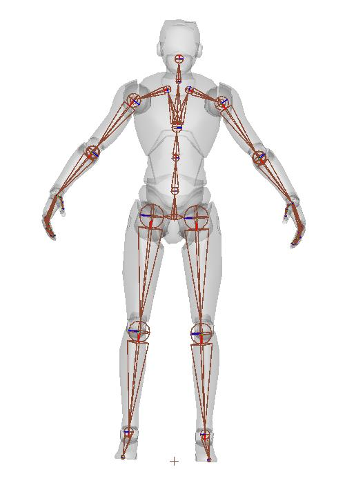
Non-humanoid 四足动物 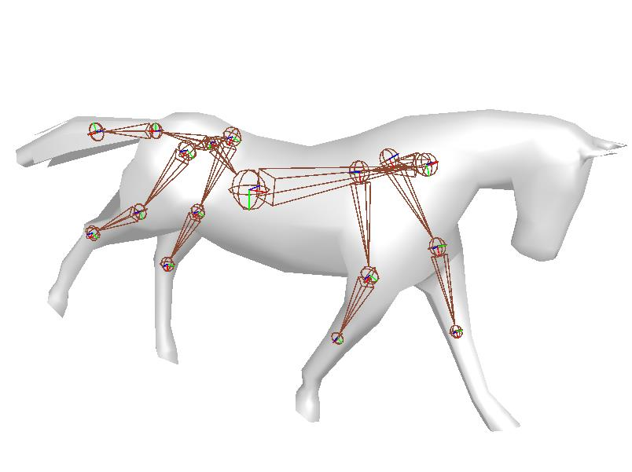
Joint 和 Bone 关节和骨段，存储/处理的是Joint 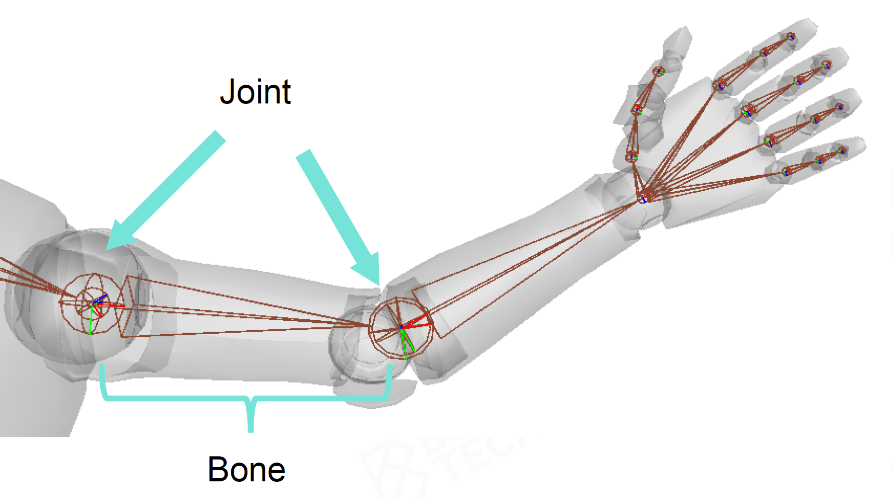
真实情况中的附加骨骼
- 复杂的表情
- 披风、翅膀、武器等外饰
- eg. 武器可能是单个Joint绑定在手上
Root节点 一般在地面 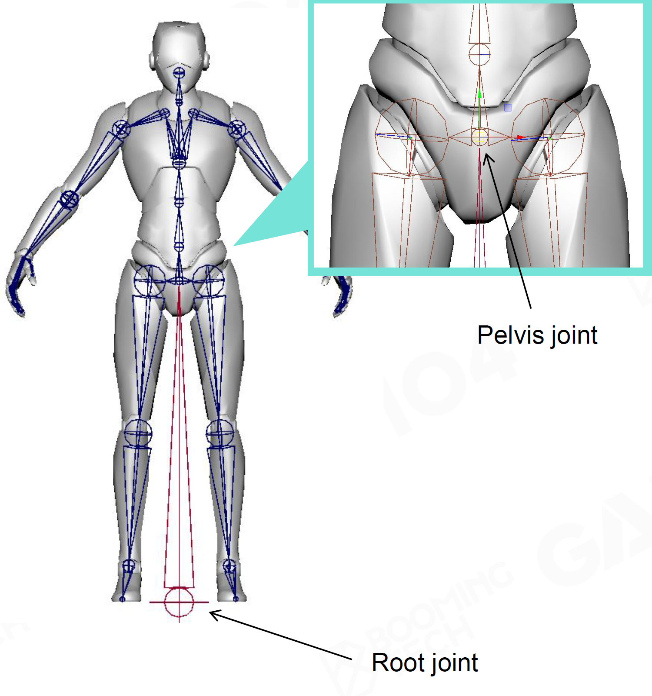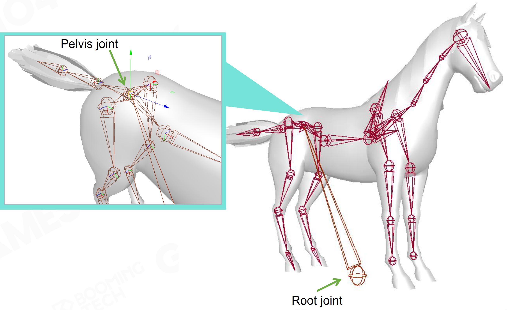
物体之间的骨骼Attach，骑马/开车等情况 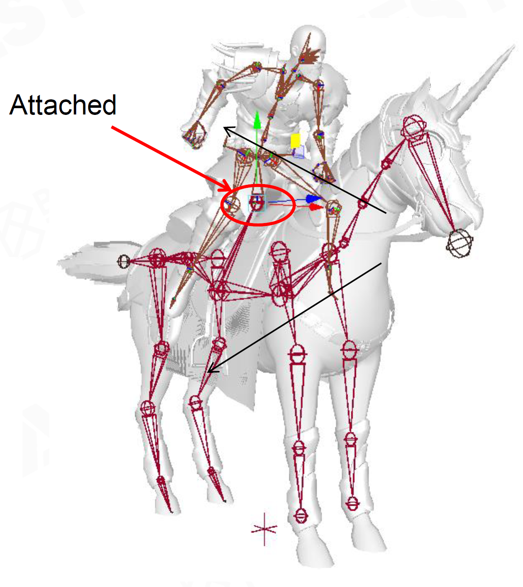
绑定初始状态 T-Pose和A-Pose
- T-Pose肩部受到挤压，精度不够
- 目前大多采用A-Pose 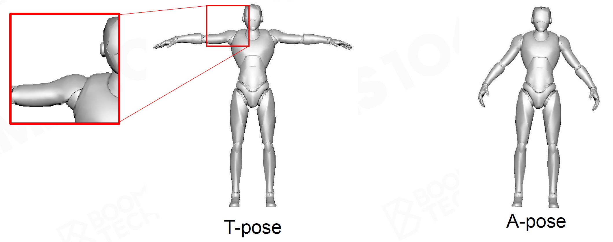
Pose：一个骨骼的状态
Joint Pose (9DoF)
- Position
- Orientation
- Scale > Math of 3D Rotation （略）
Affine Matrix 仿射矩阵 \[ M=R_{HM}T_{HM}S_{HM}=\begin{bmatrix}SR & T\\0&1\end{bmatrix} \]
从Local Space到Model Space \[ M_J^{\rm Model}=\prod_{j=J}^0 M_{p(J)}^{\rm Local} \]
Interpolation 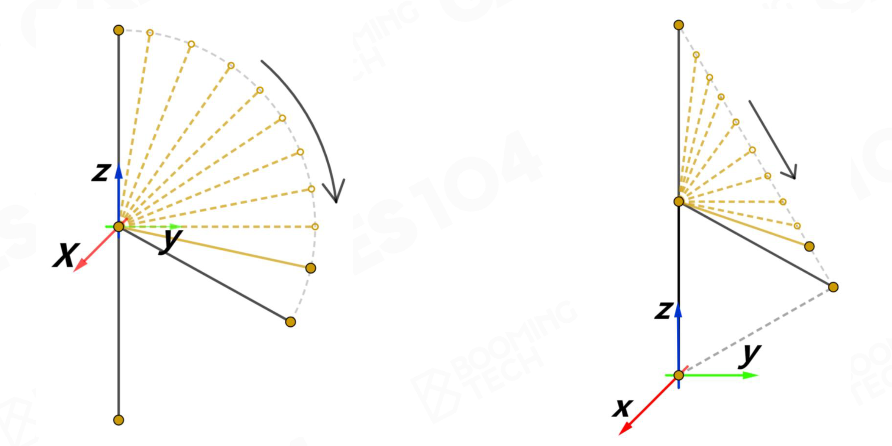 左：Local Space 右：Model Space 故在Local Space进行插值，再转换至Model Space
Skin - 蒙皮怎样运动
Skinning Matrix
\(V^{\rm Local}(t)\)：顶点 \(V\) 在Local Space，\(t\) 时间的位置： \[ V^{\rm Local}(t)\equiv V_b^{\rm Local}=(M_{b(j)}^{\rm Model})^{-1}\cdot V_b^{\rm Model} \] 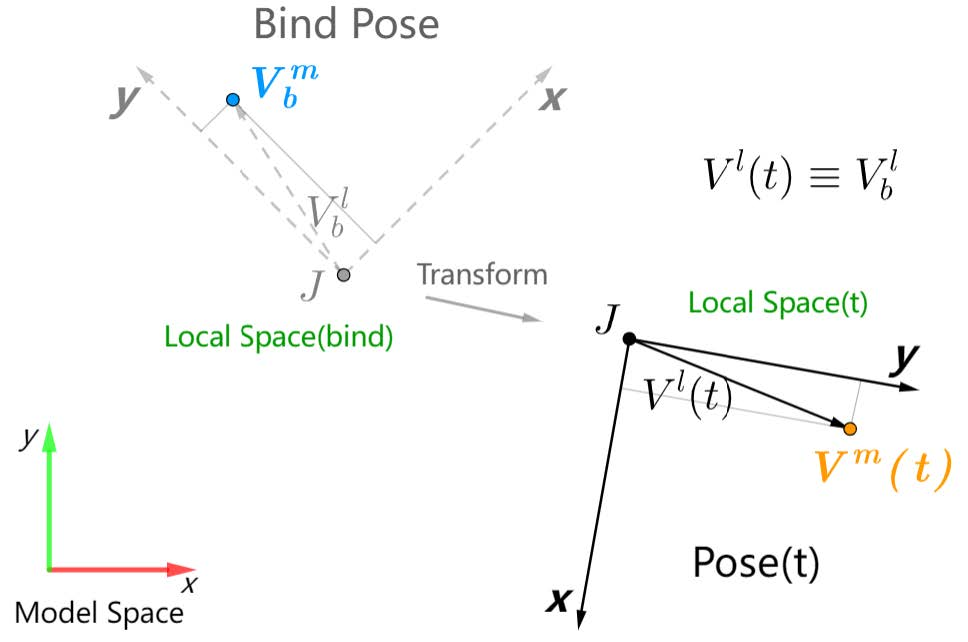
\(M_J^{\rm Model}(t)\)：Joint \(J\) 在Model Space，\(t\) 时间的pose： \[ M_J^{\rm Model}(t)=\prod_{j=J}^0 M_{p(j)}^{\rm Local}(t) \]
\(V^{\rm Model}(t)\)：顶点 \(V\) 在Model Space，\(t\) 时间的位置： \[ V^{\rm Model}(t)=M_J^{\rm Model}(t)\cdot V_J^{\rm Local}=M_J^{\rm Model}(t)\cdot(M_{b(j)}^{\rm Model})^{-1}\cdot V_b^{\rm Model} \]
Skinning Matrix \[ K_J=M_J^{\rm Model}(t)\cdot(M_{b(j)}^{\rm Model})^{-1} \]
Skinning Matrix Palette
存储每个Joint的Skinning Matrix
Model Space to World Space \[ K_J'=M^{\rm World}\cdot M_J^{\rm Model}(t)\cdot(M_{b(j)}^{\rm Model})^{-1} \] 存储该Skinning Matrix’
Bind Pose Matrix的逆需提前计算存储，以提高效率 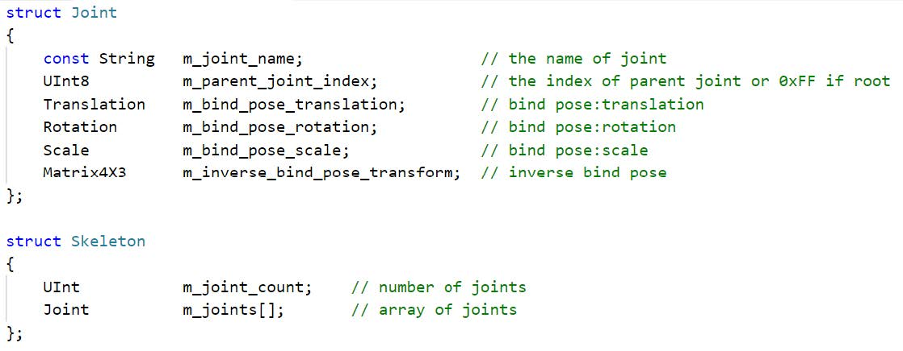
Weighted Skinning with Multi-joints
加权平均（一般不超过4个），加权总和为1
Weighted Skinned Blend
顶点 \(V\) 关于Joint \(J_i\) 的Local Space to Model Space： \[ V_{J_i}^M(t)=K_{J_i}(t)\cdot V_{b_{J_i}}^M \]
顶点 \(V\) 在Model Space： \[ V^M(t)=\sum_{i=0}^{N-1}W_i\cdot V_{J_i}^M(t) \]
Clips 动画片段
Interpolation
LERP - Translation / Scale \[ f(x)=(1-\alpha)f(x_1)+\alpha f(x_2)\\ \alpha=\dfrac{x-x_1}{x_2-x_1},\,x_1<x_2,\,x\in[x_1,x_2];\quad f(x):T(t),S(t) \]
NLERP for Quaternion - Rotation 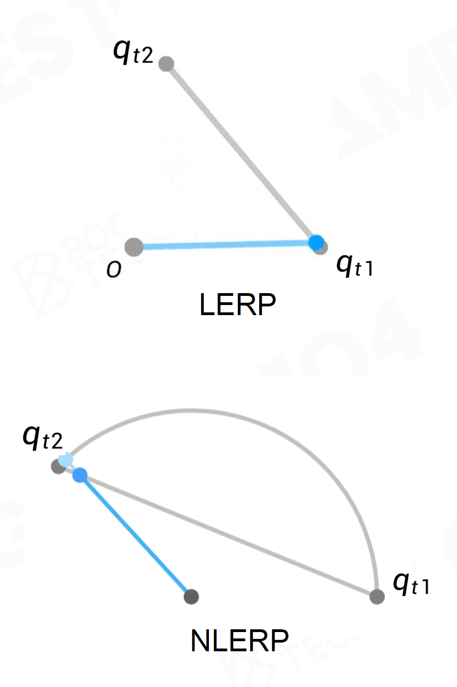
Linear Interpolation \[ q_t={\rm Lerp}(q_{t_1},q_{t_2},t)=(1-\alpha)q_{t_1}+\alpha q_{t_2}\\ \]
Normalization \[ q_t'={\rm NLerp}(q_{t_1},q_{t_2},t)=\dfrac{(1-\alpha)q_{t_1}+\alpha q_{t_2}}{\|(1-\alpha)q_{t_1}+\alpha q_{t_2}\|} \]
最短路径 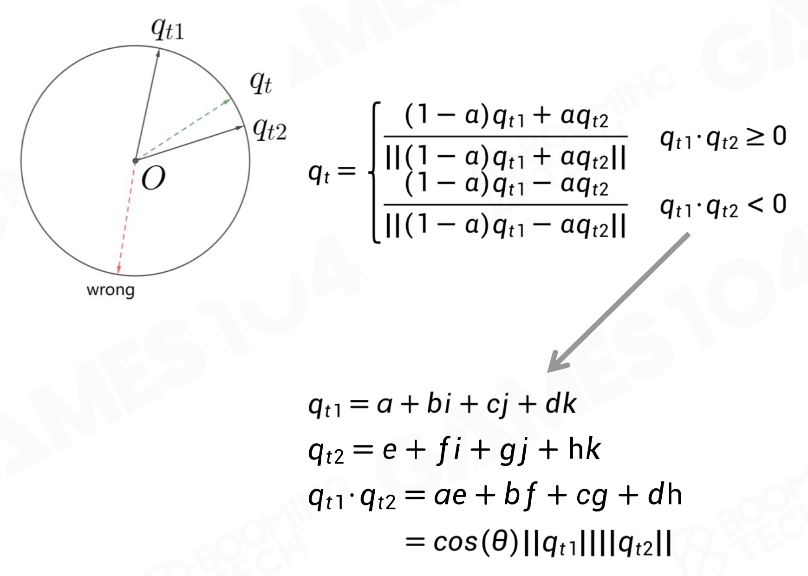
SLERP for Quaternion - Rotation
NLERP在弦上插值，故旋转不均匀；SLERP在球面上插值，但开销较大
\[ q_t={\rm SLerp}(q_{t_1},q_{t_2},t)=\dfrac{\sin((1-t)\theta)}{\sin\theta}\cdot q_{t_1}+\dfrac{\sin(t\theta)}{\sin\theta}\cdot q_{t_2}\\ \theta=\arccos(q_{t_1}\cdot q_{t_2}) \] 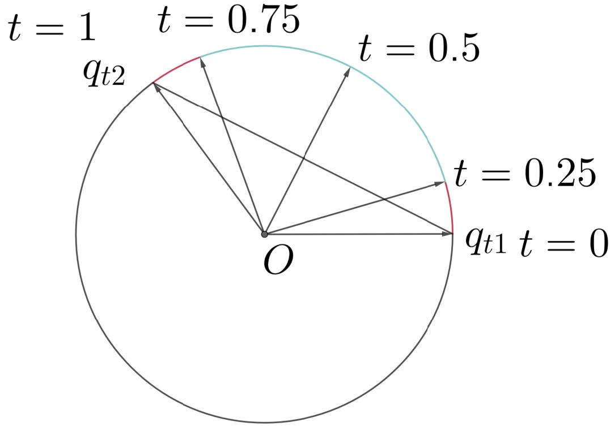
一般设置阈值，插值角度小，则NLerp，插值角度非常大时使用SLerp
Simple Animation Runtime Pipeline
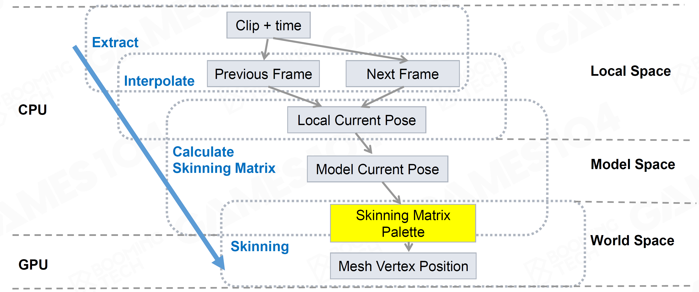
Animation Compression
大部分数据不变
- 部分Joint整个固定
- 部分Joint的Translation/Rotation/Scale有部分保持不变（尤其是Translation和Scale）
DoF Reduction 减少不变的自由度
Keyframe 记录关键帧，其他帧插值
使用插值方法测试
- 若插值结果与真实结果差异小于阈值，则不记录为关键帧
- 若插值结果与真实结果差异较大，则以真实结果为关键帧 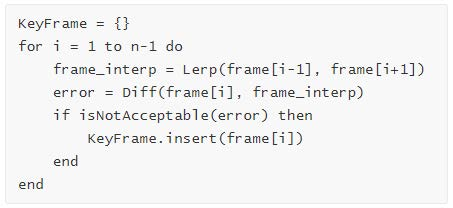 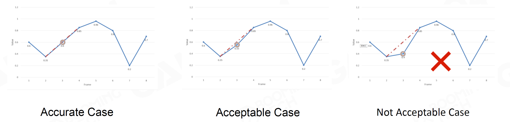
采用Catmull-Rom Spline插值 —— 比线性插值更平滑（开销大但这里不是Runtime） \[ P(t)=\begin{bmatrix}1&t&t^2&t^3\end{bmatrix} \begin{bmatrix}0&1&0&0\\ -\alpha&0&\alpha&0\\ 2\alpha&\alpha-3&3-2\alpha&-\alpha\\ -\alpha&2-\alpha&\alpha-2&\alpha \end{bmatrix} \begin{bmatrix}P_0\\P_1\\P_2\\P_3\end{bmatrix} \] 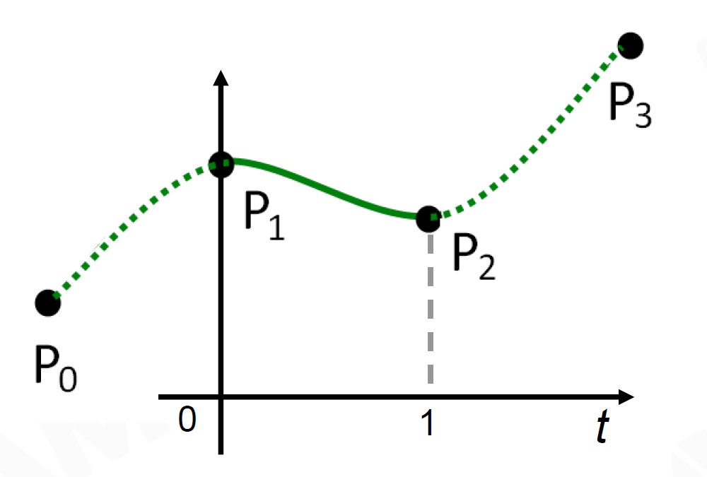
- 减少了关键帧
Float Quantization
- 32bit浮点存储量大
- 将关键帧中数据的最小值、最大值mapping到 \([0, 1]\)
- 所有数值mapping到16bit unsigned int来存储
- 四元数的特性： \[ a^2+b^2+c^2+d^2=1,\,|a|\ge\max(|b|,|c|,|d|)\\ \Rightarrow b,c,d\in[-\frac{\sqrt 2}{2}, \frac{\sqrt 2}{2}] \] 因此，经验证四元数中除模最大的数 \(a\) 以外的三个数 \(b,c,d\) 可以用15bit精度表示，另有2bit表示哪个数最大；三个元共用48bit表示 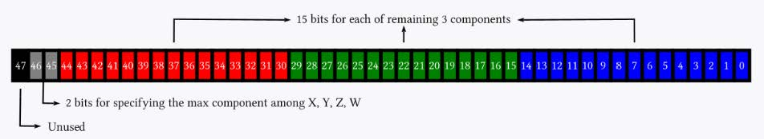
- 经过压缩： 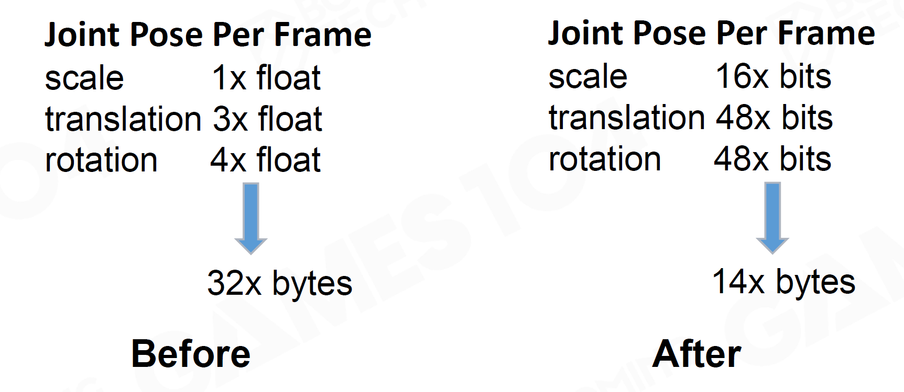
误差传播 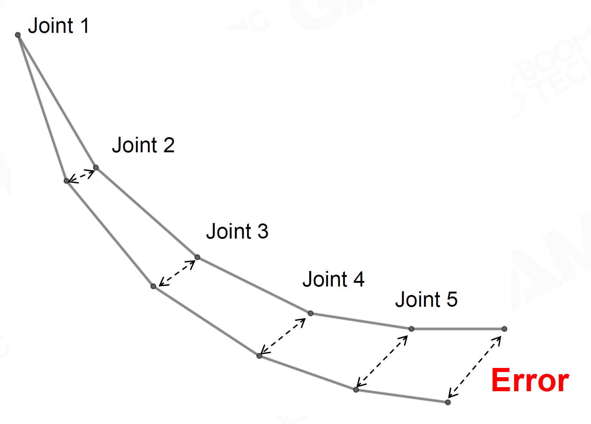
结果会导致人物手部、手上武器等末端Joint发生抖动
特殊情况需要高精度存储
- 最简单的判定方法 —— 直接给误差设定阈值
- Visual Error 视觉误差
- 为Joint在两个垂直方向设定两个Fake Vertex，计算运动后Fake Vertex的距离 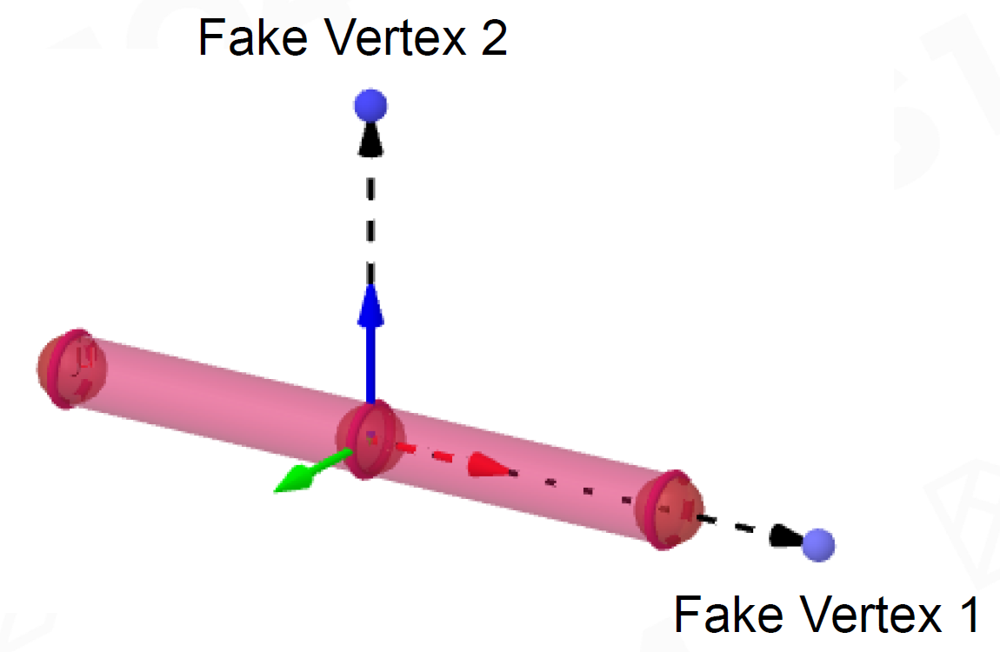
误差补偿
- 处理方法：
- 除Root外，每根bone上选一个点
- 计算每根压缩后的bone的旋转，使标记点在Model Space中接近实际位置
- 增加一个旋转来补偿误差 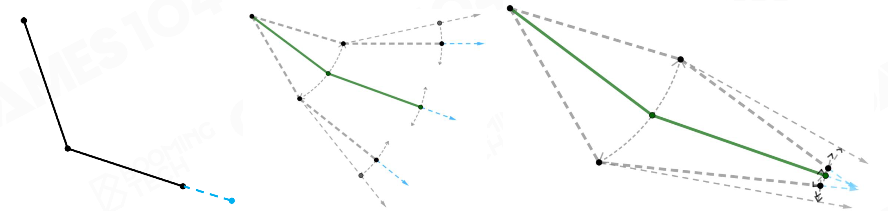
- 问题：末端骨骼的信息变成高频
- 更新的方法：FIK, Forward Inverse Kinematics
- 处理方法：
Animation DCC
- Mesh
- 关节处Mesh更细分
- Skeleton Binding 骨骼绑定
- DCC的基础骨架
- 增加武器等Gameplay中特殊的Joint
- Skinning 蒙皮，刷权重
- 自动计算 —— 结果会像橡皮
- 手动部分校正权重
- 设计关键帧动画
- Root要保持在Model Space中不变
- FBX File